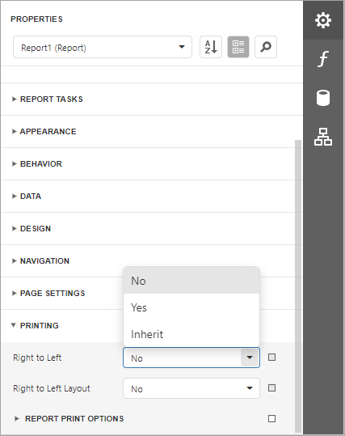
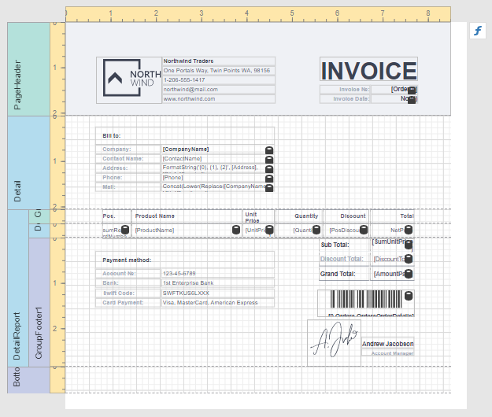
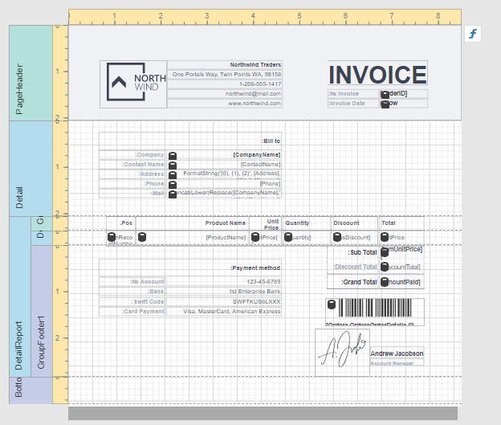
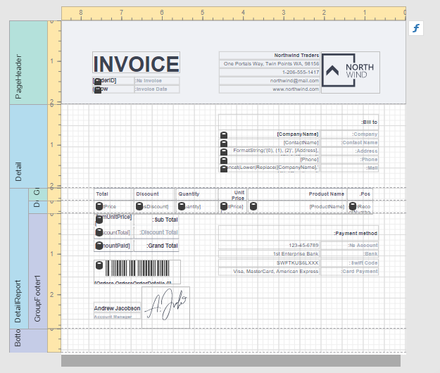

Enable the Right-To-Left Layout
The report and most of the report controls provide the Right to Left and Right to Left Layout property.

Right to Left
The property specifies content layout within a control (for most controls, this property affects the direction of their text, and for the Check Box, this property also affects the check box position within the control).
Disabled

Enabled

Initially all report controls have this property set to Inherit, and when you enable it for a report, the setting is enabled for all report controls.
The following controls support this feature:
For the Panel and Table controls, this option affects contained controls.
Right to Left Layout
When the Right To Left property of a report is set to Yes, you can also enable the Right To Left Layout property that specifies the position of controls within report bands. Enabling the right-to-left layout will also swap the page margins of a document (you are not allowed to place controls outside the right page margin).

The coordinates of report controls remain unchanged, only the point and direction of reference change (the X coordinate is calculated based on the top right corner).
The right-to-left layout is preserved when exporting a report to any supported format.